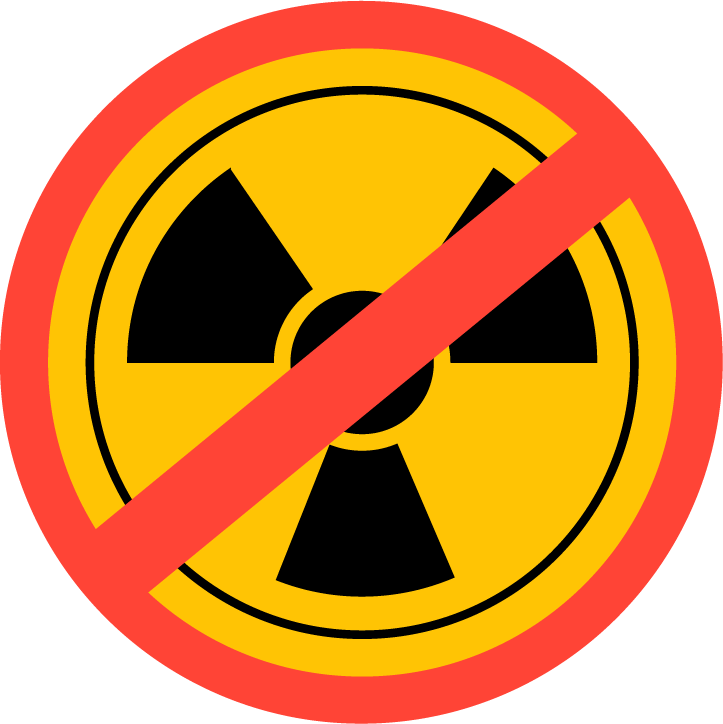

¿Que es la Resonancia Magnética?
La resonancia magnética nuclear, es un método para producir imágenes detalladas de los órganos y tejidos del cuerpo sin la necesidad de usar rayos X o radiación "ionizante". La RM utiliza un poderoso campo magnético, ondas de radiofrecuencia y una computadora para crear imágenes, las cuales sirven para evaluar lesiones, enfermedades o condiciones anormales.
